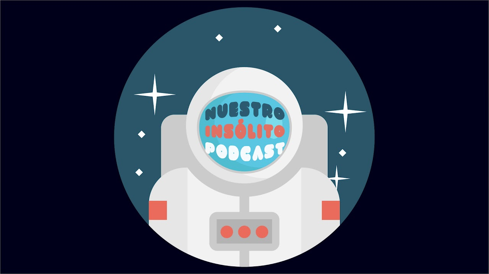

Acerca de como hemos realizado el trabajo
Para realizar la grabación del podcast he usado la herramienta llamada Audacity y la ayuda de un tutorial. El audio se compone de varias partes como son una musica de introducción la cual he tenido que editar dentro de audacity para que entre poco a poco y no de golpe. Una presentación editada tambien con un efecto de un poco de eco, la noticia que es introducida con una bajada de musica y esta sin musica de fondo para centrar la atencion del oyente solo en lo que nos interesa. Despues de la noticia viene la despedida que tambien se ha editado con musica, subidas, bajadas, para intentar hacerlo lo mas llamativo posible. Y por ultimo otra pista de audio que es una musica de despedida.
PODCASTS
